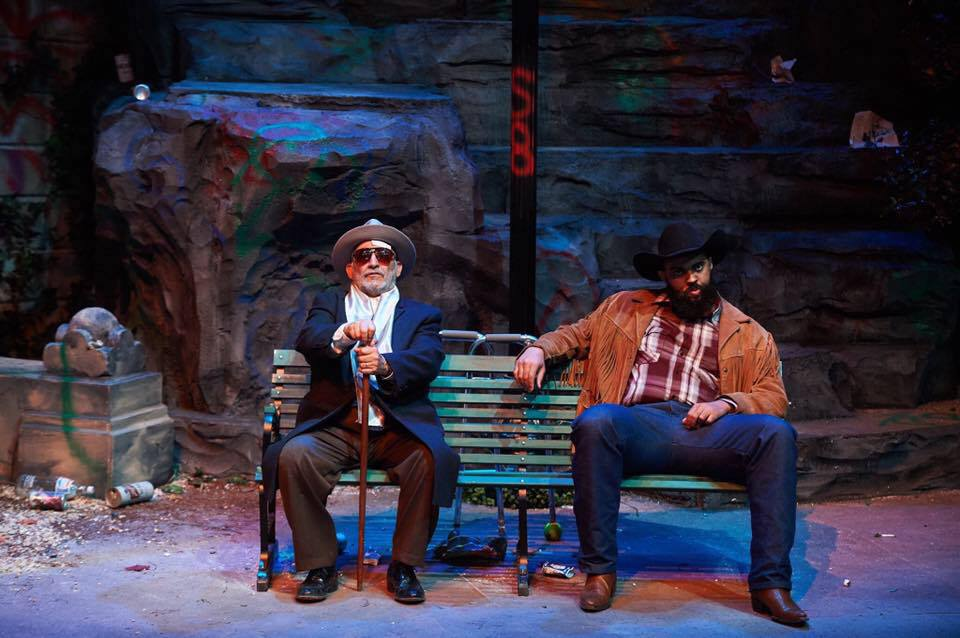

The Work
-The Stage
The Screen

Silent Partner(Producer)
Bio
Marcus Hopkins-Turner is an Atlanta native, a proud father of two and Morehouse College graduate. Regional Credits: Prince of Egypt (Tuacahn), Fences (Springer Opera House), and Porgy and Bess (Red Mountain Theatre) Atlanta Credits: Hands Up and A Christmas Carol (Alliance Theatre), Julius Caesar (The Shakespeare Tavern), Tarzan the Musical (Atlanta Lyric Theatre), Once on this Island (GET), I'm Not Rappaport and Mary Poppins (Aurora Theatre), Father Comes Home and Intimate Apparel (Actors Express), Black Nativity (Dominion Ent.), and 1776 the Musical (The Legacy Theatre). TV/Film: Young Dylan (Nickolodeon), 61st Street(AMC) IG Handle: @blackactordad